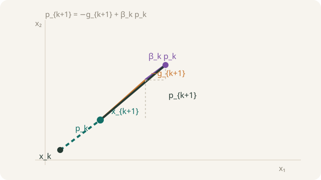

5.2.1 Fletcher–Reeves 方法：用梯度范数之比生成共轭方向
一般非线性目标没有固定的 Hessian 可以用来构造 Q-共轭方向，Fletcher–Reeves 的做法是用相邻两次梯度的平方范数之比作为系数，把上一方向与新梯度线性组合，在迭代中自动生成搜索方向。
为什么需要新的公式
线性共轭梯度解决的是固定线性方程组 Qx=b，其中 Q 对称正定，所有方向关于同一个 Q 共轭。一般非线性问题要极小化光滑函数 f(x)，没有全局的 Q，也就没有固定的共轭内积可依赖。
把线性 CG 里的残差 r_k=b−Qx_k 换成梯度 g_k=∇f(x_k)，把固定步长换成沿射线做线搜索，形式上就得到同一个递推 p_k=−g_k+β_k p_{k−1}。二者只剩一处区别：β_k 不再由 Q 直接给出，而要由非线性信息决定。Fletcher 与 Reeves 在 1964 年提出以相邻梯度平方范数之比作为系数，这就是本节的方法。
Fletcher–Reeves 递归
在点 x_k 得到梯度 g_k 后，先沿方向 p_k 做一次线搜索得到 x_{k+1}=x_k+α_k p_k 与新的梯度 g_{k+1}，再构造下一步方向。下标约定：g_k=∇f(x_k)，初始方向 p_0=−g_0。
算法 5.4（Fletcher–Reeves，见 Nocedal & Wright §5.2.1）。给定起点 x_0，令 p_0=−g_0；对 k=0,1,2,…：用线搜索求步长 α_k，令 x_{k+1}=x_k+α_k p_k；若 ‖g_{k+1}‖ 足够小则停止；否则按上式算 β_{k+1} 与 p_{k+1}。注意公式里 g_k 在分子、g_{k−1} 在分母，索引容易写反。

第一步退化为最速下降
初始方向取 p_0=−g_0，就是最速下降方向；之后每一步借 β_k 引入前一步的曲率信息。一个关键观察是：即使没有显式的 Q，只要线搜索是精确的，FR 方向就仍然是下降方向。
证明要点：沿 p_{k−1} 的精确线搜索给出 g_kᵀp_{k−1}=0，即新梯度与旧方向正交。于是 g_kᵀp_k=g_kᵀ(−g_k+β_k p_{k−1})=−‖g_k‖²+β_k·0=−‖g_k‖²<0。可见下降性来自精确线搜索，而不是额外假设。
精确线搜索使 g_k⊥p_{k−1}（图中直角标记）。因此 p_k=−g_k+β_k p_{k−1} 与 g_k 的内积恒为 −‖g_k‖²，不依赖于 β_k 的大小。
二维可复现算例
沿用 5.1.1 的同一正定二次问题：Q=[[3,1],[1,3]]，b=(5,7)，故 ∇f(x)=Qx−b，精确解 x*=(1,2)。起点 x_0=(0,0) 给出 g_0=(−5,−7)，p_0=(5,7)。
第一次线搜索：p_0ᵀQp_0=292，g_0ᵀp_0=−74，故 α_0=37/146，x_1=(185/146,259/146)，g_1=(42/73,−30/73)。于是 β_1=‖g_1‖²/‖g_0‖²=(42²+30²)/(73²·74)=36/5329。这就是公弎直接给出的数值，不需要构造 Q-共轭方向。
第二次线搜索给出 α_1=73/148，x_2=x_1+α_1 p_1=(1,2)=x*，且 β_2=0 触发终止。在二维正定二次问题上，精确线搜索的 FR 恰好重现线性共轭梯度，因此两步终止。上述数值由本页 Python 用精确分数逐步断言核验。
与线性 CG 的关系与边界
当目标为正定二次函数时，Qx=b 的残差即梯度，精确线搜索的 FR 与线性共轭梯度取相同方向、相同步长，因而继承 §5.1 的全部结论：n 步终止与 Krylov 子空间最优性。可以说 FR 是把线性 CG 的 β 公式原样搬到非线性目标的直接推广。
但这层推广只在二次函数上有保证。对一般非线性函数，梯度不再线性变化，β_k 可能过大，使方向偏离甚至不再是下降方向，从而出现停滞。这正是 5.2.2 的 Polak–Ribière 等变体与 5.2.3 重启策略要处理的问题。本页程序只处理一个固定二维二次问题，用来核对步长与 β 公式；它不是通用求解器，也不覆盖非二次、病态或高维情形。
交互：条件数如何拉开两种方法的差距
考虑对角二次目标 f(x)=½(x_1²+κ x_2²)，起点 (1,1)。拖动滑块改变条件数 κ，比较最速下降与 Fletcher–Reeves 在精确线搜索下的迭代步数。在二维二次问题上 FR 至多两步终止，而最速下降的步数随 κ 增大迅速上升 —— 这正是共轭方向带来的加速。该计算为教学示意，不代表一般问题的迭代次数。
实时模型计算
Python：FR 步长与 β 的分数断言
下面的程序只依赖标准库，用精确分数重放上面的两步 FR，并断言 α_0=37/146、β_1=36/5329、α_1=73/148、x*= (1,2)。它只处理一个固定二维二次问题。
"""Fletcher-Reeves nonlinear conjugate gradient on a 2x2 quadratic."""
from fractions import Fraction
Q = ((3, 1), (1, 3))
b = (5, 7)
def matvec(M, v):
return (M[0][0]*v[0] + M[0][1]*v[1], M[1][0]*v[0] + M[1][1]*v[1])
def dot(u, v):
return u[0]*v[0] + u[1]*v[1]
def gradient(x):
q = matvec(Q, x)
return (q[0] - b[0], q[1] - b[1])
def fletcher_reeves(x0, max_iter=10):
x, g = x0, gradient(x0)
p = (-g[0], -g[1])
trace = []
for k in range(max_iter):
alpha = -dot(g, p) / dot(p, matvec(Q, p))
x = (x[0] + alpha*p[0], x[1] + alpha*p[1])
g_next = gradient(x)
beta = dot(g_next, g_next) / dot(g, g)
trace.append((k, alpha, beta, x))
if dot(g_next, g_next) < Fraction(1, 10**12):
break
p = (-g_next[0] + beta*p[0], -g_next[1] + beta*p[1])
g = g_next
return x, trace
if __name__ == "__main__":
x_star, trace = fletcher_reeves((Fraction(0), Fraction(0)))
assert trace[0][1] == Fraction(37, 146)
assert trace[0][2] == Fraction(36, 5329)
assert trace[1][1] == Fraction(73, 148)
assert trace[1][2] == 0
assert x_star == (Fraction(1), Fraction(2))
print("x* =", x_star, "beta =", [str(t[2]) for t in trace])